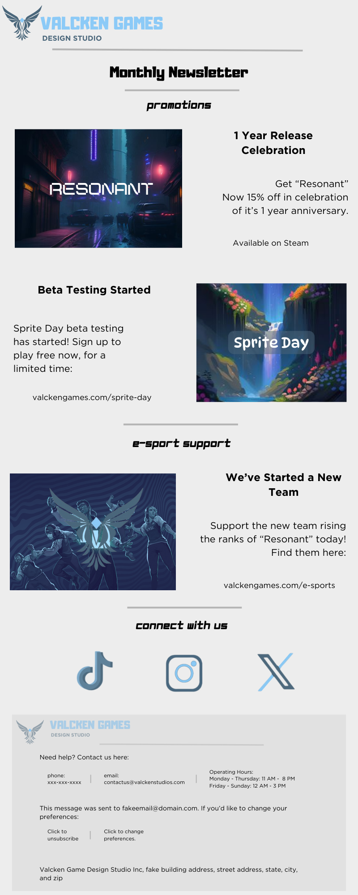

EGE Portfolio
About
Projects
Interdisciplinary
Email
← Back to project library
E-Info Design (Newsletters)
Digital newsletter layout balancing scanability, brand voice, and campaign goals.
Open full image
